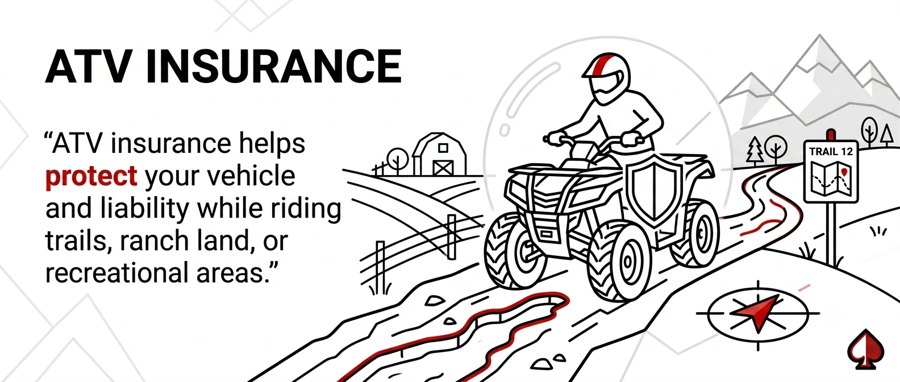

ATV Insurance
Coverage for off-road adventures.

Coverage for off-road adventures.
ATV insurance helps protect your vehicle and liability while riding trails, ranch land, or recreational areas.
Yes. Most ATV policies include coverage for off-road use on trails, ranches, and recreational areas.
Many policies offer optional coverage for accessories, upgrades, and custom parts.